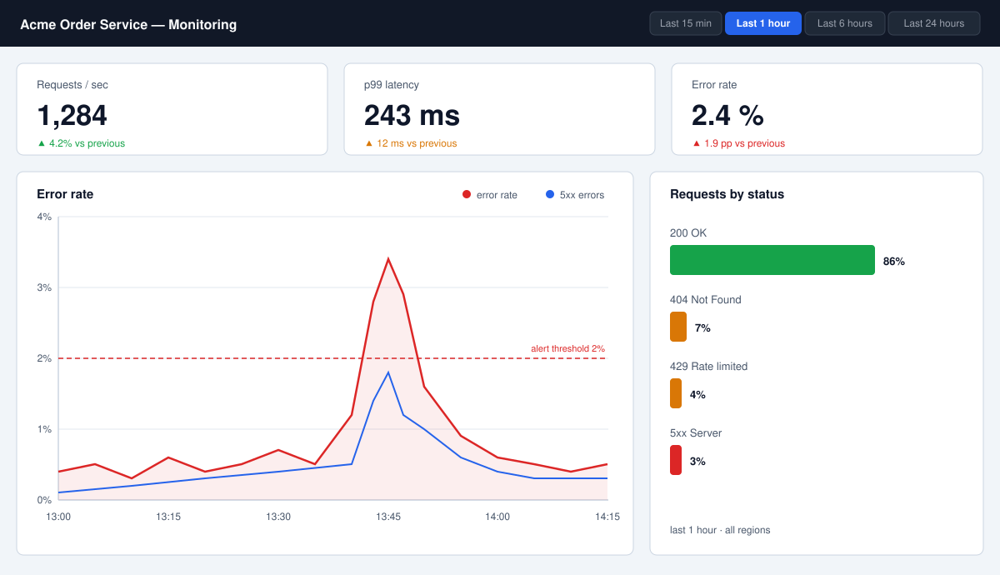

High Error Rate — Acme Order Service¶
Status: Active · Owner: Platform Team · Last updated: 2026-09-01
In this runbook:
Alert description¶
The high error rate alert fires when the order service's 5xx rate
exceeds 5% of requests over a 5-minute window. It is visible on the
order service dashboard in the Acme Cloud console and pages the
on-call engineer through PagerDuty (service acme-order-service).

Figure 1: The Acme Cloud monitoring dashboard for the order service.
The 5xx rate panel (top left) is the panel that fires this alert; the
queue depth panel (top right) distinguishes request-path failures
from worker-path failures.
A sustained 5xx rate means customers are seeing failed order placements or failed status updates. Treat every firing as a real incident until diagnostics say otherwise.
Severity¶
| Severity | Condition | Response |
|---|---|---|
| SEV-1 | 5xx above 20% for 10 min | Page on-call; open incident in #ops |
| SEV-2 | 5xx above 5% for 10 min | Page on-call; mitigate within the hour |
| SEV-3 | 5xx above 2% sustained | Ticket; fix in business hours |
If customers are seeing failed orders, treat the alert as at least SEV-2 regardless of the measured rate.
Fast-path mitigation¶
Do these first, in order, before deep diagnostics:
- Check for a recent deploy. If a release landed on the order
service or its worker in the last 30 minutes, roll it back through
the deployment pipeline (see the
deploy-releaseSOP). This is the most common cause of this alert. - Pause webhook delivery if the error spike is on the worker path (queue depth rising, request path healthy). Webhook failures retry automatically; pausing them stops the retry storm.
- Restart order service replicas one at a time if the database pool looks exhausted. A rolling restart resets connection pools without dropping capacity.
- Scale the worker up if queue depth is climbing and payment authorization is the bottleneck.
Diagnostics¶
Health endpoints¶
# Gateway and order service health checks
curl -sS -o /dev/null -w '%{http_code} gateway\n' \
https://api.acme.example/healthz
curl -sS -o /dev/null -w '%{http_code} order-service\n' \
https://order-service.internal.acme.example:8080/healthz
curl -sS https://order-service.internal.acme.example:8080/readyz
Logs¶
# Recent errors from the order service (last 15 minutes)
acme-logs query --service order-service --since 15m \
--filter 'level=error OR status>=500' --limit 50
# Dead-letter queue depth: a rising DLQ means worker failures
acme-queue depth orders-queue.internal order-events.dlq
Metrics¶
# 5xx rate, last hour
acme-metrics query --since 1h \
'rate(http_requests_total{service="order-service",code=~"5.."}[5m])'
# p99 latency, last hour
acme-metrics query --since 1h \
'histogram_quantile(0.99, rate(http_request_duration_seconds_bucket{service="order-service"}[5m]))'
If 5xx and p99 latency rise together, suspect the database or the gateway. If 5xx rises while latency stays flat, suspect application-level failures: a bad deploy, an exhausted pool, or a failed dependency call.
Decision flowchart¶
Escalation¶
- First page: on-call engineer, PagerDuty service
acme-order-service - Second page: on-call lead, if mitigation fails or the alert is SEV-1
- Third page: Platform Team, if the database or message queue is involved
When to escalate
Page the on-call lead immediately if any of the following is true:
- The error rate has not returned to baseline within 30 minutes of mitigation.
- A rollback was attempted and did not recover the service.
- Data integrity is at risk, for example orders stuck in
createdwithout payment. - You are unsure which component is failing after 15 minutes of diagnostics.